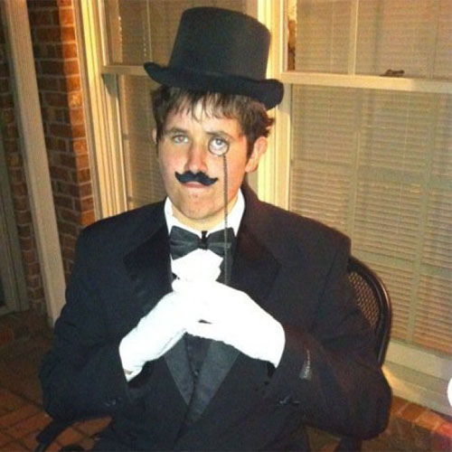

[Place Holder Text]
Our Founder, Buzz Killington, believed in our right to own Guns. A great man, who knew that people like himself would need a place to shoot their guns amd mingle with like minded individuals.
He knew that a day would come when people would call us "crazy" or "Gun nuts." Alex Jones does us no favors. So, Buzz took a loan, and created Safety First.
Buzz, died on May 1st, 1992. It was a completely non-gun related death, despite what the "police" say. We have our theories of course, and every Tuesday we hold a group session to help determine what killed him. Going Nearly 11 years strong on this tradition. (Hint: His murder involves Time Travel, Pierce Morgan, and Obama.)
Buzz Believed in our rights. That's what we know. We aren't simple "gun nuts," but true, honest to god Americans. Says so on the plaque Buzz put in the lobby. Buzz established four separate locations before his untimely death.